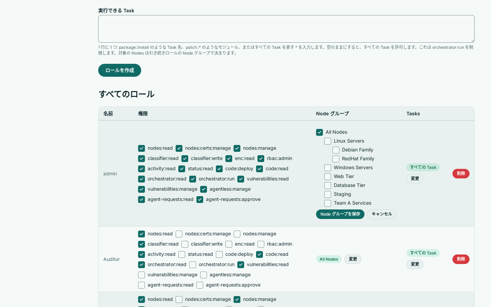

使う
ユーザー、ロール、トークン
ロールと権限で利用者にアクセスを与え、ID プロバイダーでサインインし、プログラム用のトークンを発行します。
コンソール内のすべてのものは権限で保護されており、すべての権限はロールを通じて利用者に付与されます。enc-bridge のようなプログラムは、代わりにサービストークンを使います。
ユーザー、ロール、トークンの管理には rbac:admin が必要です。
権限
| 権限 | 許可する操作 |
|---|---|
nodes:read |
Node とその Facts、Reports、パッケージ、保留中の更新、証明書の状態の閲覧 |
nodes:manage |
Node の削除と、コンソールが保留中の更新をスキャンする頻度の設定 |
nodes:certs:manage |
証明書の署名、失効、クリーンアップ (CA 管理者に相当) |
classifier:read |
Node グループの閲覧 |
classifier:write |
Node グループの作成、変更、削除 |
enc:read |
openvoxserver と同様の分類の読み取り |
code:read |
リポジトリと deploy の閲覧 |
code:deploy |
deploy の開始 |
orchestrator:read |
Jobs の閲覧 |
orchestrator:run |
Jobs の開始 (Puppet run、Task、Plan、パッチ実行)、Node のパッケージ報告の切り替え、保留中の更新を探す Node のスキャン |
vulnerabilities:read |
脆弱性の検出結果の閲覧 |
vulnerabilities:manage |
脆弱性プロバイダーの設定 |
agentless:manage |
エージェントレスの SSH 対象と共有の認証情報の追加、変更、削除、およびそのホスト鍵の信頼 |
activity:read |
アクティビティログの閲覧 |
status:read |
システムページの閲覧 |
agent-requests:read |
AI エージェントが実行を依頼した内容の閲覧 |
agent-requests:approve |
それらのリクエストの承認と却下 |
rbac:admin |
ユーザー、ロール、サービストークン、エージェントトークンの管理 |
ブートストラップ管理者にはすべての権限が与えられます。新しいバージョンのコンソールで追加された権限が既存のロールに自動的に追加されることはないため、アップグレード後はロールページで、新しい権限を持たせるべきロールに付与してください。
利用者にアクセスを与える
- 管理、ロールの順に開き、その職務に必要な権限を持つロールを作成します。たとえば、閲覧するだけで変更しない人には
nodes:read、classifier:read、orchestrator:read。 - ユーザーを開き、ユーザーを作成してロールを割り当てます。
ユーザーの権限は、そのすべてのロールを合わせたものです。チーム全体に同じロールを与えるには、ユーザーグループを使います。
パスワードとロックアウト
これらのルールは、ユーザー名とパスワードでログインするアカウントが対象です。ID プロバイダーでサインインする人やサービストークンは対象外です。管理者 (rbac:admin) が管理、アカウントポリシーで設定します。変更はすべてのコンソールインスタンスで即座に適用されます。
パスワードルール
| ルール | 変更しない場合 | 設定可能な範囲 |
|---|---|---|
| 最小文字数 | 12 文字 | 8～72 |
| 英小文字、英大文字、数字、記号をそれぞれ含むこと | 必須なし | それぞれオンまたはオフ |
無効にできないルールが 2 つあります: パスワードはアカウントのユーザー名と同じにできず、72 バイトより長くすることもできません。
パスワードは設定時に検査されます: 管理者がユーザーを作成したりユーザーのパスワードを設定したりするとき、そして本人が設定で自分のパスワードを変更するときです。それぞれのフォームにはルールが列挙され、拒否されたパスワードが満たしていなかったルールに印が付きます。
既存のパスワードが再検査されることはありません。ルールを厳しくした後も全員がログインでき、新しいルールは各パスワードが次に変更されるときに適用されます。
ロックアウト
パスワードによるログインに 10 回連続で失敗すると、アカウントは 15 分間ロックされます。どちらの数値も変更でき (ログイン回数は 3～100 回、時間は 1～1,440 分)、ロックアウトを無効にすることもできます。
- アカウントがロックされている間は、正しいパスワードでも拒否されます。ロック中のログイン失敗によってロックが延長されることはありません。
- ロックは自然に解除されます。ログインに成功すると、カウントはゼロに戻ります。
- ログインの失敗は、すべてのコンソールインスタンスを通じて合算して数えられます。
- ログインページはアカウントがロックされていることを表示しません。パスワードが誤っている場合と同じ応答を返します。「ロック」と表示すると、どのユーザー名が存在するかを攻撃者に教えてしまうためです。ログインに失敗したときのメッセージには、繰り返し試行するとアカウントがロックされることが必ず記されています。
ロックアウトはパスワードの推測への対策であるため、止めるのはパスワードによるログインだけです:
- すでに開いているセッションはそのまま続きます。
- ID プロバイダーによるサインインは引き続き機能します。
- サービストークンには影響しません。
- 自分のパスワードを変更するときは、現在のパスワードを求められます。現在のパスワードを間違えるとログイン失敗として数えられ、アカウントがロックされている間は変更が拒否されます。
アカウントのロックを解除する
管理、ユーザーの順に開きます。ロックされたアカウントには…までロック中とその時刻が表示されます。ロック解除を選ぶか、パスワードを設定でユーザーに新しいパスワードを与えます。後者でもアカウントのロックが解除されます。
唯一の管理者がロックアウトされ、他に誰もアカウントのロックを解除できない場合は、ロックが解けるのを待ってください。誰かが意図的にログインに失敗してアカウントをロックし続けるのを防ぐには、/api/v1/auth/login へのリクエストを制限する仕組みの背後にコンソールを置くか、ロックアウトを無効にしてその仕組みに頼ります。
ロック、ロック解除、拒否されたパスワード、ポリシーの変更は監査ログに書き込まれます。ロック、ロック解除、ポリシーの変更はアクティビティページにも表示されます。
グループにロールを与える
ユーザーグループは、名前を付けたユーザーの集合です。グループに付与されたロールは、各自が持つロールに加えてすべてのメンバーが持つことになるため、チームが変わったときは各アカウントではなくグループを変更します。
- 管理、ユーザーグループの順に開き、グループに名前を付けてグループを作成を選びます。
- メンバーの下の変更を選び、所属するユーザーにチェックを入れます。
- ロール列で、グループが与えるべきロールにチェックを入れます。
複数のグループに属している人や、あるロールを自身とグループの両方を通じて持っている人は、それを 1 つとして持ちます。その人からロールを外してもグループによる付与は残り、その人をグループから外しても本人が持つものは残ります。
ユーザーページには、各利用者のグループと、それを通じて持っているロールが「Patcher (Web ops 経由)」のように表示されます。これらはそこではチェックを外せません: グループを変更してください。ロールページには、各ロールが付与されているグループが表示されます。
グループと制限
グループはロールを追加するのであって、統合するのではありません。各ロールは、利用者に直接割り当てられたロールと同様に、引き続きそれ自身の Node グループと、あれば独自の Task リストに対して適用されます。Web サーバーに対して patch::* に限定されたロールを付与するグループに属し、さらにデータベースサーバーに対してすべての Task を許可するロールを割り当てられている人は、Web サーバーではパッチ用の Task を、データベースサーバーでは何でも実行できます。
削除と除外
- グループを削除すると、そのメンバーからグループのロールが取り除かれます。メンバーがいる場合、コンソールは削除する前に何人が影響を受けるかを示します。
- ユーザーを削除するとそのユーザーはグループから外され、ロールを削除するとそのロールを持つグループからも取り除かれます。
rbac:adminを持つ人が誰もいなくなる場合、コンソールはグループの削除、グループからのロールの取り除き、メンバーの除外を行いません。
変更が反映されるタイミング
グループへの参加・離脱や、グループのロールの付与・取り消しは、他のロールの変更と同様に、次にその人のセッションが更新されたとき (15 分以内) に反映されます。スケジュールされた Job は、発火のたびに所有者のグループに照らして確認されます。
グループ、そのメンバー、そのロールへのすべての変更は、rbac カテゴリーで監査証跡に書き込まれます。
ロールを一部の Node に限定する
ロールの権限は Node グループに対して適用されます。新しいロールはフリート全体である All Nodes に対して付与されます。チームを自分たちのサーバーに限定するには、代わりにそのチームのグループに対してロールを付与します:
- チームが閲覧すべき Node をちょうど含む Node グループがあることを確認してください。Node を分類するを参照してください。
- 管理、ロールの順に開きます。
- ロールの Node グループ列で変更を選び、All Nodes のチェックを外して、チームのグループにチェックを入れます。
- Node グループを保存を選びます。


グループへの付与はその配下のすべてのグループに及ぶため、Linux Servers に対するロールは Debian Family 内の Node も閲覧できます。ロールのメンバーには、次にセッションが更新されたとき (15 分以内) に変更が反映されます。グループに出入りする Node は 1 分以内に表示または非表示になります。
このように限定された人には、Node のデータが表示されるあらゆる場所で自分の Node だけが表示されます: Node の一覧と各 Node の Facts、Reports、パッケージ、脆弱性、ダッシュボードの数値、パッケージカタログ、脆弱性の一覧、Jobs ページ、そしてグループページと Code ページの Node 数です。グループ外の Node は、存在しない Node とまったく同じ応答を返します。Nodes ページには、どのグループを閲覧しているかが表示されます。
同じグループが、その人にできることも制限します。Puppet、Task、Plan の実行、Node のパッケージ報告の切り替え、エージェントのアップグレード、Node の削除、証明書の署名・失効・クリーンアップは、いずれもその権限を付与するロールのグループに Node が含まれている必要があります。グループ外の Node を指定した操作は拒否され、コンソールはそれがどの Node だったかを示します。操作が複数の Node を指定し、そのうち 1 つが範囲外であれば、どの Node に対しても何も行われません。
Job の Node は、名前ではなくクエリや Node グループで選ぶこともできます。Jobs を実行するを参照してください。その場合は拒否されるのではなく絞り込まれます: 一部の Node グループに限定された人には、一致する Node のうち自分のグループにあるものだけが対象となり、残りについては何も知らされません。そうした人のクエリにはサブクエリを含めることができません。サブクエリを使うと、グループ外の Node について知ることができてしまうためです。
スケジュールされた Job は所有者として実行され、開始のたびにその時点での所有者のロールが使われます。ある人のロールを削除すると、その人のスケジュールは何も開始しなくなり、ロールを狭めるとスケジュールの実行対象も狭まります。利用者は自分のスケジュールを閲覧・変更でき、全員のスケジュールを閲覧・変更できるのは All Nodes に対して付与されたロールだけです。
変更できる範囲より広く閲覧する
各権限はそれを付与するロールによって制限されるため、閲覧と操作の範囲が異なる場合があります。チームにフリート全体を閲覧させつつ、Puppet の実行は自分たちのサーバーに限らせるには、そのメンバーに 2 つのロールを与えます:
| ロール | 権限 | Node グループ |
|---|---|---|
| フリート閲覧者 | nodes:read, classifier:read, orchestrator:read |
All Nodes |
| Web 運用者 | orchestrator:run |
Web Servers |
すべての Node とすべての Job を閲覧できますが、データベースサーバーでの実行は拒否されます。
Node グループが制限しないもの
- アクティビティページ。これは監査証跡であり、すべての Node 名が記されています。
activity:readは、フリート全体について知ってよい人にだけ与えてください。 - Node グループの定義。
classifier:readを持つ全員が、固定された Node 名を含むすべてのグループを閲覧でき、classifier:writeを持つ人はどのグループでも変更できます。 - サービストークン。常にフリート全体が対象です。ロールと同様に一部の Task に限定できます。プログラム用のトークンを発行するを参照してください。
- 保存された Plan。
orchestrator:readを持つ全員がすべての Plan を閲覧でき、orchestrator:runを持つ全員がそのどれでも変更できます。実行は自分の Node に限られます。 - コード deploy。Node に関するものではありません。
知っておくべきこと
- 一度も Puppet を実行していない Node には Facts がないため、どのグループのルールにも一致しません。チームのグループに含まれるのは、いずれかに固定されている場合だけです。これには証明書の署名を待っている Node も含まれます。Node の証明書を管理するを参照してください。
- Node グループがまったくないロールには、Node グループなしの警告が表示されます。その権限はどの Node にも適用されません。
- Job の履歴は Node の現在のグループに従います。Node が別のグループに移ると、過去の Jobs もそれとともに古いグループの表示から外れます。
ロールを一部の Task に限定する
orchestrator:run 単独では、ロールが対象とする Node で、コンソールが知っているすべての Task を実行できます。チームにパッチ用の Task だけを実行させるには、そのロールに Task 許可リストを与えます:
- 管理、ロールの順に開きます。
- ロールの Tasks 列で変更を選びます。
- 1 行に 1 パターンずつ入力し、Task を保存を選びます。新しいロールのフォームにも同じフィールドがあります。
パターンは次のいずれかです:
| パターン | 許可する操作 |
|---|---|
package::install |
その Task のみ |
patch::* |
patch モジュール内のすべての Task と、モジュール自身の Task patch |
* |
すべての Task |
一致は完全一致で大文字と小文字を区別するため、patch::* は patching::apply を許可しません。それ以外の形は受け付けられません: 末尾以外の場所にワイルドカードがあるパターン、空行、大文字を含むものは拒否され、フォームには入力した内容が残ります。1 つのロールは最大 64 文字のパターンを最大 20 個まで持てます。
パターンがないロールは、すべての Task を許可します。既存のロールはすべてこの状態のままなので、パターンを追加するまで何も変わりません。リストは orchestrator:run を狭めるだけで、何かを付与することは決してなく、対象の Node は引き続きロールの Node グループで決まります。
利用者のロールの組み合わせ方
各ロールのリストは、その人のすべての Node グループではなく、そのロール自身の Node グループに対して適用されます。次の 2 つのロールを持つ人は:
| ロール | Node グループ | Tasks |
|---|---|---|
| Web パッチ担当者 | Web Servers | patch::* |
| データベース運用者 | Database Servers | (すべての Task) |
Web サーバーでは patch::apply を、データベースサーバーでは任意の Task を実行でき、package::install のような Task は Web サーバーでは拒否されます。2 つ目のロールを持っていても、1 つ目のロールの範囲は広がりません。
クエリや Node グループで選ばれた Node で Task を開始すると、Node グループの場合と同様に、一致する Node のうちその人が実行を許可されたものだけで実行され、残りについては何も知らされません。Plan は、そのすべての Task ステップを実行できる Node に絞り込まれるため、すべてのステップは引き続き同じ Node で実行されます。名前で指定した Node の一覧に、その Task が許可されていない Node が含まれている場合は、その Node を示して拒否されます。
拒否されたときの表示
ロールで許可されていない Task を開始しようとすると、Task 名とともに 403 で拒否され、何も開始されません。Plan の場合は step 2 (package::install) のようにステップも示されます。存在しない Task と実行が許可されていない Task は同じように拒否されるため、一覧からどの Task が存在するかが明かされることはありません。各拒否は、利用者、Task、ステップとともに task.denied として監査ログに記録され、Task のパラメーターは決して記録されません。
リストが制限しないもの:
- Puppet run。Task ではありません。
- Jobs とその履歴の閲覧。これが制限するのは、その人が開始できるものです。
- 閲覧しかできない人。
orchestrator:readを持ちorchestrator:runを持たない人には、Task 一覧にすべての Task が表示されます。
Task を実行ダイアログ、Plan エディター、スケジュールのフォームには、その人が実行できる Task だけが表示されます。
Plans とスケジュール
- その人が実行できない Task を含む Plan や スケジュールの保存は、そのステップと Task を示して拒否されます。
- 他の人が保存した Plan は、より限定されたリストを持つ利用者にもすべてのステップを表示し、実行できないステップには印が付きます。その利用者はそれを実行できず、それらのステップを削除しない限り変更を保存することもできません。
- スケジュールは開始のたびに確認されます。その時点での所有者のロールに照らして確認されます。所有者がその Task のいずれかをもう実行できない場合は何も開始されず、その発火は Task (Plan の場合はステップも) を示してスキップとして記録されます。
変更が反映されるタイミング
ロールのリストは、他の権限と同様に、次にセッションが更新されたとき (15 分以内) に利用者のセッションに反映されます。スケジュールは次回の開始時に反映します。
利用者の Task リストはアクセストークンに含まれて運ばれます。上記の制限により 1 つのロールは最大約 1.3 KB に収まり、ほとんどの人は短いパターンをいくつか持つだけです。多数の制限付きロールを誰かに与える場合は、コンソールの前段にあるリバースプロキシがそれだけの大きさのリクエストヘッダーを受け付けることを確認してください。8 KB までしか許可しないものもあります。
ID プロバイダーでサインインする
コンソールは OpenID Connect による利用者のサインインにも対応しています。ローカルのサインインとサービストークンは、それと並行して引き続き機能します。リダイレクト URL を https://console.example.com/api/v1/auth/oidc/callback としてコンソールをプロバイダーに登録し、次を設定します:
| 設定 | 説明 |
|---|---|
CONSOLE_OIDC_ISSUER |
プロバイダーの issuer URL |
CONSOLE_OIDC_CLIENT_ID, CONSOLE_OIDC_CLIENT_SECRET |
コンソールの登録情報 |
CONSOLE_OIDC_REDIRECT_URL |
上記のリダイレクト URL |
CONSOLE_OIDC_SCOPES |
既定値は openid profile email groups |
CONSOLE_OIDC_USERNAME_CLAIM |
新しいユーザーの名前の取得元となるクレーム。既定値は email |
CONSOLE_OIDC_ROLE_CLAIM |
利用者のグループを列挙するクレーム。既定値は groups |
CONSOLE_OIDC_ROLE_MAPPING |
クレームの値からロール名への JSON オブジェクト ({"platform-admins":"admin"} など)。各ロールは既に存在している必要があり、マッピングされていない値は無視されます |
すると、サインインページに SSO でログインが表示されます。サインインのたびに、コンソールはその利用者のクレームが現在示しているマッピング済みのロールを与え、示さなくなったマッピング済みのロールを取り除きます。管理者が手動で割り当てたロールには一切触れません。
プロバイダーは、ユーザー名とグループのクレームを user-info エンドポイントの背後だけでなく、ID トークン自体に含める必要があります。プロバイダーによっては、アクセストークンも発行する場合に既定でこれらを ID トークンから除外するため、含めるための設定が必要です。
プログラム用のトークンを発行する
サービストークンは作成時に選んだ固定の権限セットを持ち、自然に期限切れになることはありません。プログラムごとに専用のトークンを、必要な権限だけで発行してください:
- 管理、サービストークンの順に開きます。
- 新しいサービストークンで、名前を付けて権限を選びます。
- 必要なら、実行できる Task に、開始を許可する Task を ロールと同様に 1 行に 1 パターンずつ列挙します。すべての Task を許可するには空のままにします。リストはトークンの作成時に固定されます。
- サービストークンを作成を選び、トークンをコピーします: トークンは一度しか表示されません。
サービストークンを削除すると、すべてのコンソールインスタンスで同時に失効します。サインアウトも同じように、そのセッションのトークンを失効させます。
AI エージェントにアクセスを与えるには、代わりにエージェントトークンを使います: 有効期限があり、Node グループに限定され、要求するすべての変更は誰かの承認を待ちます。AI エージェントにコンソールを使わせるを参照してください。
監査証跡を残す
コンソールを通じて行われたすべての変更はアクティビティページに表示され、閲覧には activity:read が必要です。これとは別に、コンソールはログコレクター向けに監査ログを書き出すことができ、カテゴリーごとにレベルを 1 つ設定します:
| 設定 | カテゴリー |
|---|---|
CONSOLE_AUDIT_NODES |
Node と証明書 |
CONSOLE_AUDIT_CLASSIFIER |
Node グループ |
CONSOLE_AUDIT_RBAC |
ユーザー、ユーザーグループ、ロール、トークン |
CONSOLE_AUDIT_AUTH |
サインインとサインアウト |
CONSOLE_AUDIT_CODE |
コード deploy |
CONSOLE_AUDIT_ORCHESTRATOR |
Jobs と、ロールで許可されていない人に対して拒否された Task |
CONSOLE_AUDIT_VULNERABILITIES |
脆弱性プロバイダー |
それぞれ off、writes (既定値: 変更とサインイン)、full (すべての閲覧も含む) のいずれかです。監査イベントは、CONSOLE_AUDIT_LOG_PATH でファイルを指定しない限り、コンソール自身のログ出力に送られます。